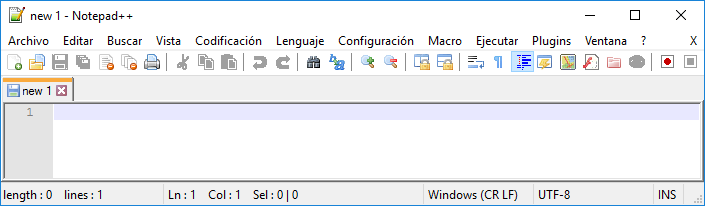

Abre Notepad++, una vez abierto pulsa en Archivo, Nuevo:
A continuación, pulsa en Archivo, Guardar como y guárdalo como mi_primer_programa.py con tipo de archivo Python file (*.py; *.pyw):

Escribe el siguiente código de Python 3:
print('¡Hola, mundo!')A continuación, pulsa en Archivo, Guardar.

Si te fijas, en la parte superior aparece la ruta donde está alojado tu código en Python 3. En este caso el código está en la carpeta C:\Users\Nacho\Documents\.
Lo primero que tienes que hacer es abrir el símbolo del sistema (en inglés, command prompt, también conocido como cmd.exe o cmd) que es el intérprete de comandos de Windows.
A continuación, entra en la carpeta donde está alojado tu código en Python 3 con el comando cd ruta_carpeta donde ruta_carpeta será la ruta de la carpeta donde está alojado dicho código.
Por último, ejecuta el programa con python mi_primer_programa.py:
¡Enhorabuena! Has escrito tu primer programa en Python 3 y lo has ejecutado con éxito.
Curso creado por Manuel Ignacio López Quintero bajo esta licencia.